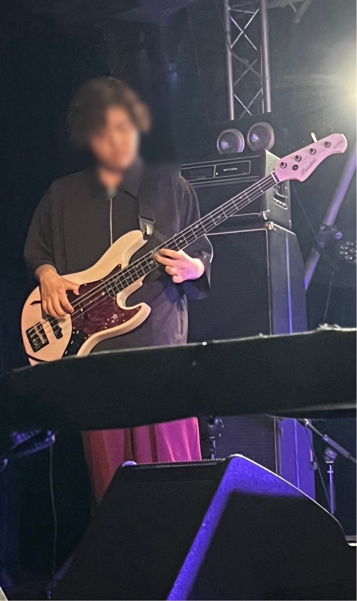
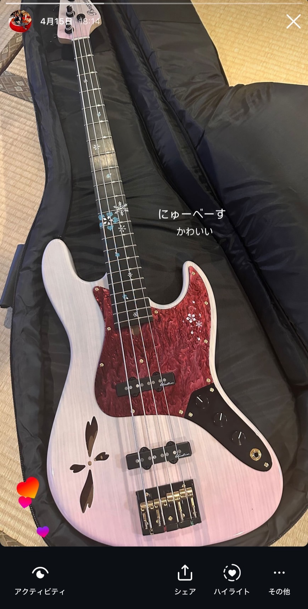

中間典寿のプロフィール

6月に行ったライブでヨルシカの春泥棒を演奏した時の写真です。
所属している部活
現在軽音部とバドミントンサークルに所属しています。
軽音部ではベースを担当していて今はKEYTALKというバンドの曲を練習しています。
個人的な練習では東京事変というバンドのギターとベースを最近練習しています。

写真のベースは今使っているベースです。すごくかわいいです。
趣味
ライブに行くのが好きです。
最近だと「Feelin'Good」という藤井風さんのライブに行きました。
ほかの趣味だと料理をするのにはまっています
高校生の時にイタリア料理店のキッチンのアルバイトをしていたので、イタリア料理には自信あります。
歌手トップ３
私の好きな歌手のトップ３です！（）は好きな曲
- 東京事変（キラーチューン）
- King Gnu(雨燦々)
- 藤井風（旅路）
その他
トップ３以外にもSixTONESという男性アイドルグループが好きです。
SixTONESのすべてのライブを応募して一度も当選したことが無いので、次のライブは絶対当てます。
使用PC
Windows
PC利用経験や、普段の使い方
YouTubeを見るのに利用することが多いです。最近ではSixTONESの動画や楽器の演奏動画などを見ています。
自分の強みや弱みなど
強み：責任感が強いと思っています。
弱み：失敗を恐れて作業が遅くなることがたまにあります。
TECH-BASE参加にあたり、意気込み
プログラミング等はあまりやったことが無いのですが、あきらめずに最後まで頑張ります！
このページのTOPへ ／ ググる